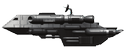
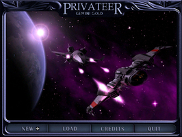
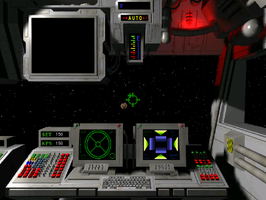
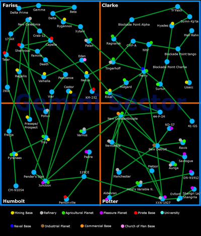
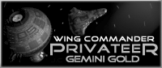

Wing Commander - Privateer Gemini Gold
Dieser Artikel wurde für die folgenden Ubuntu-Versionen getestet:
Ubuntu 16.04 Xenial Xerus
Ubuntu 14.04 Trusty Tahr
Zum Verständnis dieses Artikels sind folgende Seiten hilfreich:
 Wing Commander - Privateer Gemini Gold, ein Remake des Klassikers Wing Commander: Privateer, baut auf die Spieleengine von Vega Strike auf. Das Spielgeschehen der Weltraumhandelssimulation findet im Gemini-Sektor statt. Man spielt Grayson Burrows und erbt ein altes Raumschiff der Light-Explorer-Klasse. Im dünn besiedelten Sektor der Konföderation, wo niemand etwas zu verschenken hat, versucht man Geld zu verdienen, um das eigene Raumschiff aufzurüsten und bessere Schiffe zu kaufen. Sein Glück in dieser unwirtlichen Region kann man als Pirat, Händler oder Kopfgeldjäger versuchen und sich dabei Stück für Stück durch die Geschichte der Einzelspielerkampagne arbeiten.
Die Erweiterung Wing Commander: Privateer Righteous Fire führt diese Einzelspielerkampagne weiter und ist in diesem Remake bereits enthalten.
|  |  |
| Menü | Spielszene |
Installation¶
Privateer - Gemini Gold 1.03 
 für Linux herunterladen. Die Ausführrechte [1] für die Datei PrivateerGold1.03.bz2.bin setzen und die Installation [2] einleiten:
für Linux herunterladen. Die Ausführrechte [1] für die Datei PrivateerGold1.03.bz2.bin setzen und die Installation [2] einleiten:
./PrivateerGold1.03.bz2.bin
Als Installationsverzeichnis ~/Spiele/privateer_Gold wählen und den Starter unter ~/bin/ anlegen. Über privgold kann das Spiel nach erfolgreichem patchen gestartet [4] werden. Nach dem ersten Start wird im Homeverzeichnis der versteckte Ordner ~/.privgold100/ angelegt. Auf Wunsch einen Menüeintrag vornehmen [5].
Patch¶
Den aktuellen Patch aus dem Forum herunterladen und in das Installationsverzeichnis entpacken [3].
Es wird angeraten, die folgenden Änderungen in der vegastrike.config vorzunehmen, allerdings erst nachdem man das Spiel einmal gestartet hat:
<var name="weapon_damage_efficiency" value=".7"/> <var name="percent_to_tractor" value="1"/> <var name="tractor.scoop_angle" value="10."/> <bind key="space" modifier="none" command="SheltonKey"/>
vegastrike.config¶
Die Einstellungen können in ~/.privgold100/vegastrike.config mit einem Editor [6] bearbeitet werden. Generell sind alle Einstellungsmöglichkeiten unter #cat aufgeführt.
Handbuch¶
Ein Handbuch ist im Installationsverzeichnis oder auf der Projektseite zu finden.
Karte¶

Tastenkürzel¶
Die komplette Belegung ist dem Handbuch zu entnehmen.
| Tastenkürzel | |
| Taste(n) | Beschreibung |
| Esc + Q | Spiel beenden |
 | Nase |
| + + - | Geschwindigkeit |
 | Steuerung |

Infobox¶
| Wing Commander - Privateer Gemini Gold | |
| Genre: | Raumkampfsimulation |
| Sprache: | |
| Veröffentlichung: | 1993 (Original) / 2009 (Remake) |
| Entwickler: | Wing Commander - Privateer Gemini Gold - Team |
| Systemvoraussetzungen: | 400 MB Festplattenspeicher |
| Medien: | Download |
| Strichcode / EAN / GTIN: | - |
| Läuft mit: | nativ |


- Erstellt mit Inyoka
-
 2004 – 2017 ubuntuusers.de • Einige Rechte vorbehalten
2004 – 2017 ubuntuusers.de • Einige Rechte vorbehalten
Lizenz • Kontakt • Datenschutz • Impressum • Serverstatus -
Serverhousing gespendet von